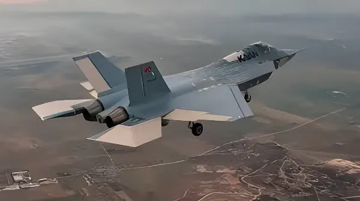

Depuis l'abandon espagnol du programme F-35 américain à l'été 2025 et l'enlisement du SCAF franco-allemand, Madrid explore une option aussi inattendue que révélatrice : l'acquisition du chasseur furtif de 5e génération KAAN, développé par Turkish Aerospace Industries. Ce rapprochement avec Ankara s'inscrit dans une réorientation profonde de la politique de défense de Pedro Sánchez, tiraillée entre ambitions d'autonomie stratégique européenne et impératifs de renouvellement d'une flotte vieillissante.
L'armée de l'air et de l'espace espagnole (Ejército del Aire y del Espacio) fait face à un impératif de renouvellement de sa flotte de combat. Ses F/A-18 Hornet arrivent en fin de vie, et ses EAV-8B Harrier II embarqués sur le porte-aéronefs Juan Carlos I nécessitent un successeur. Pendant plusieurs années, la réponse semblait tracée : une commande de F-35A pour l'aviation basée à terre et de F-35B à décollage court pour la flotte. Le gouvernement de Pedro Sánchez avait même budgété 6,25 milliards d'euros à cet effet.
Mais en août 2025, l'exécutif espagnol a rompu avec cette trajectoire. Selon El País, citant des sources officielles, la décision d'investir 85 % des crédits de défense en Europe rendait incompatible l'achat en masse d'un appareil américain. En toile de fond : la dégradation des relations transatlantiques sous l'administration Trump, la signature par Washington de l'America First Arms Transfer Strategy en février 2026 — qui fait des ventes d'armes un instrument de politique étrangère —, et les tensions tarifaires entre les États-Unis et l'Espagne. C'est dans cette brèche qu'émerge l'option turque.
Lancé en 2010 par Turkish Aerospace Industries (TAI), le programme TF-X — baptisé KAAN — vise à doter la Turquie de son propre chasseur de 5e génération, après son exclusion du programme F-35 en 2019, consécutive à l'achat du système antimissile russe S-400. L'appareil a effectué son premier vol le 21 février 2024 depuis la base de Mürted, près d'Ankara. Conçu comme un bimoteur furtif multirôle, il présente une envergure d'environ 14 m, une longueur de 21 m et une masse maximale au décollage estimée à 34 750 kg. Sa vitesse annoncée atteint Mach 1,8 en supercroisière.
Sur le plan technologique, le KAAN intègre un radar à antenne active (AESA), des baies d'armement internes, des systèmes de fusion de capteurs et des capacités de connectivité avec des drones d'accompagnement. Les premiers prototypes utilisent deux turboréacteurs General Electric F110 d'origine américaine — soumis aux contrôles ITAR — mais la Turquie développe en parallèle son propre moteur, le TF-35000, dont les premiers tests au sol sont prévus en 2026 et l'intégration sur les appareils de série visée pour 2032. Les premières livraisons opérationnelles à l'armée de l'air turque sont annoncées pour la fin 2028 ou début 2029.
Lancement officiel du programme TF-X par TAI, avec l'ambition de doter la Turquie d'un chasseur de 5e génération national.
Exclusion de la Turquie du programme F-35 après l'achat du système S-400 russe. Le TF-X devient priorité absolue pour Ankara.
Premier vol du KAAN depuis la base de Mürted, près d'Ankara. Deux prototypes supplémentaires présentés début 2026.
L'Indonésie signe un contrat pour 48 KAAN, estimé entre 10 et 15 milliards de dollars — premier client export officiel du programme.
L'Espagne abandonne officiellement l'achat de F-35 et réaffecte 6,25 Md€ vers des équipements européens. L'option turque émerge.
Madrid confirme la commande de 30 avions d'entraînement Hürjet (TAI) pour 2,6 Md€ dans le cadre du programme SAETA II, en coopération avec Airbus.
Au salon SAHA 2026 à Istanbul, le PDG de TAI confirme avoir reçu une demande officielle des forces aériennes espagnoles pour le KAAN. Les échanges sont décrits comme « préliminaires ».
C'est au salon SAHA 2026 d'Istanbul, début mai 2026, que l'affaire prend une tournure officielle. Mehmet Demiroğlu, directeur général de TAI, confirme à la presse avoir reçu une demande formelle des forces aériennes et spatiales espagnoles pour le chasseur KAAN. « Nous avons reçu une demande, nous sommes aux premières étapes de la discussion », déclare-t-il, qualifiant la démarche d'« intergouvernementale ». À ce stade, aucune des deux parties ne précise de calendrier ni de volumes. Ces échanges interviennent alors que Madrid et Ankara ont déjà noué une coopération industrielle significative dans l'aéronautique militaire.
La logique turque repose sur un argument central : le transfert de technologie. Là où Lockheed Martin verrouille son code source et où Dassault protège ses technologies critiques, Ankara propose un partage industriel sans équivalent. Un scénario en deux temps se dessine : livraison des Hürjet entre 2028 et 2029 dans un premier temps, puis acquisition de KAAN dans une seconde phase. L'objectif côté espagnol serait de bâtir un consortium d'entreprises locales — dans lequel Airbus Defence and Space Espagne jouerait un rôle pivot — capables de participer activement au programme. Le programme SAETA II, lancé le 28 avril 2026 à Getafe, prévoit déjà jusqu'à 60 % de participation industrielle espagnole.
| Appareil | Statut | Quantité / Montant |
|---|---|---|
| Hürjet (TAI) | Commandé — déc. 2025 | 30 appareils / 2,6 Md€ |
| Eurofighter Typhoon | En cours (Halcón 1 & 2) | 45 appareils supplémentaires |
| KAAN (TAI) | Discussions préliminaires | Volume non précisé |
| F-35 (Lockheed) | Abandonné — août 2025 | — |
| SCAF (FCAS) | En suspens après crise avr. 2026 | Participation incertaine |
L'intérêt espagnol pour le KAAN s'explique aussi par l'enlisement du Système de combat aérien du futur (SCAF). Le 18 avril 2026, la médiation entre Dassault Aviation et Airbus sur l'avion de combat européen a échoué. Les médiateurs français et allemand ont rendu des conclusions séparées, le médiateur allemand jugeant qu'« un avion commun n'est plus possible ». L'Espagne, troisième partenaire du programme depuis 2019, se retrouve sans cap clair. Si Emmanuel Macron a affirmé le 24 avril 2026 que le SCAF n'est pas mort, la France a déjà englouti 1,8 milliard d'euros dans le programme sans avoir vu un seul avion voler.
Pour Madrid, un rapprochement avec Ankara présente des avantages géopolitiques : il permet de diversifier ses fournisseurs, d'échapper à la tutelle américaine, et de renforcer les liens avec une puissance OTAN majeure dont l'influence régionale s'est considérablement accrue. Mais il n'est pas sans risques. Le KAAN utilise des moteurs américains soumis à des contrôles d'exportation (ITAR) — en septembre 2025, le ministre turc des Affaires étrangères signalait que le Congrès américain bloquait des licences pour ces moteurs. Par ailleurs, la marine espagnole conserve un besoin de remplacement de ses Harrier II embarqués sur le Juan Carlos I, pour lequel seul le F-35B offre à ce jour une capacité de décollage court et d'atterrissage vertical.
« Nous avons reçu une demande, nous sommes aux premières étapes de la discussion. Je ne peux pas m'exprimer ouvertement car il s'agit d'une question intergouvernementale. »
— Mehmet Demiroğlu, PDG de Turkish Aerospace Industries, salon SAHA 2026, mai 2026Le dossier du KAAN révèle une Espagne en quête de boussole stratégique dans un paysage de défense européen en recomposition rapide. La rupture avec le F-35, le flottement du SCAF, et la commande d'avions d'entraînement turcs dessinent une orientation nouvelle : celle d'une puissance moyenne qui entend peser sur les choix industriels et rééquilibrer ses partenariats entre les États-Unis, l'Europe continentale et des acteurs émergents comme la Turquie. Le pari est cohérent sur le papier — transfert technologique, souveraineté industrielle, diversification — mais il n'est pas dénué d'ambiguïtés. L'Espagne reste membre de l'OTAN, partenaire du programme Eurofighter, et co-signataire du SCAF. Chaque pas vers Ankara est donc scruté par Paris, Berlin et Washington. La décision finale sur le KAAN, encore loin d'être arrêtée, sera le test grandeur nature de la capacité de Pedro Sánchez à naviguer entre ses engagements atlantistes et ses ambitions d'émancipation stratégique.
Desde el abandono español del programa F-35 americano en el verano de 2025 y el estancamiento del SCAF francoalemán, Madrid explora una opción tan inesperada como reveladora: la adquisición del caza furtivo de 5.ª generación KAAN, desarrollado por Turkish Aerospace Industries. Este acercamiento a Ankara se inscribe en una profunda reorientación de la política de defensa de Pedro Sánchez, debatiéndose entre ambiciones de autonomía estratégica europea e imperativos de renovación de una flota envejecida.
El Ejército del Aire y del Espacio se enfrenta a un imperativo de renovación de su flota de combate. Sus F/A-18 Hornet llegan al final de su vida útil, y sus EAV-8B Harrier II embarcados en el portaaeronaves Juan Carlos I necesitan un sucesor. Durante varios años, la respuesta parecía clara: un pedido de F-35A para la aviación terrestre y de F-35B de despegue corto para la flota naval. El gobierno de Pedro Sánchez había presupuestado incluso 6.250 millones de euros a tal efecto.
Pero en agosto de 2025, el ejecutivo español rompió con esa trayectoria. Según El País, citando fuentes oficiales, la decisión de invertir el 85 % de los créditos de defensa en Europa hacía incompatible la compra masiva de un aparato estadounidense. De fondo: el deterioro de las relaciones transatlánticas bajo la administración Trump, la firma por Washington de la America First Arms Transfer Strategy en febrero de 2026 — que convierte las ventas de armas en un instrumento de política exterior — y las tensiones arancelarias entre Estados Unidos y España. Es en esta brecha donde emerge la opción turca.
Lanzado en 2010 por Turkish Aerospace Industries (TAI), el programa TF-X — bautizado KAAN — aspira a dotar a Turquía de su propio caza de 5.ª generación, tras su exclusión del programa F-35 en 2019, consecuencia de la compra del sistema antimisil ruso S-400. El aparato realizó su primer vuelo el 21 de febrero de 2024 desde la base de Mürted, cerca de Ankara. Concebido como un bimotorreactor furtivo multirol, presenta una envergadura de unos 14 m, una longitud de 21 m y una masa máxima al despegue estimada en 34.750 kg. Su velocidad anunciada alcanza Mach 1,8 en supercrucero.
Desde el punto de vista tecnológico, el KAAN integra un radar de antena activa (AESA), bahías de armamento internas, sistemas de fusión de sensores y capacidades de conectividad con drones de escolta. Los primeros prototipos utilizan dos turborreactores General Electric F110 de origen estadounidense — sujetos a controles ITAR — pero Turquía desarrolla en paralelo su propio motor, el TF-35000, cuyos primeros ensayos en tierra están previstos para 2026 y cuya integración en los aparatos de serie se plantea para 2032. Las primeras entregas operacionales a la fuerza aérea turca están anunciadas para finales de 2028 o principios de 2029.
Lanzamiento oficial del programa TF-X por TAI, con la ambición de dotar a Turquía de un caza de 5.ª generación nacional.
Exclusión de Turquía del programa F-35 tras la compra del sistema S-400 ruso. El TF-X se convierte en prioridad absoluta para Ankara.
Primer vuelo del KAAN desde la base de Mürted, cerca de Ankara. Dos prototipos adicionales presentados a principios de 2026.
Indonesia firma un contrato para 48 KAAN, estimado entre 10 y 15.000 millones de dólares — primer cliente de exportación oficial del programa.
España abandona oficialmente la compra de F-35 y reasigna 6.250 M€ hacia equipamientos europeos. Emerge la opción turca.
Madrid confirma el encargo de 30 aviones de entrenamiento Hürjet (TAI) por 2.600 M€ en el marco del programa SAETA II, en cooperación con Airbus.
En el salón SAHA 2026 de Estambul, el CEO de TAI confirma haber recibido una solicitud oficial de las fuerzas aéreas españolas para el KAAN. Los intercambios son descritos como « preliminares ».
Fue en el salón SAHA 2026 de Estambul, a principios de mayo de 2026, donde el asunto adquirió carácter oficial. Mehmet Demiroğlu, director general de TAI, confirma a la prensa haber recibido una solicitud formal de las fuerzas aéreas y espaciales españolas para el caza KAAN. «Hemos recibido una solicitud, estamos en las primeras etapas de la discusión», declara, calificando el proceso de «intergubernamental». Por el momento, ninguna de las dos partes precisa plazos ni volúmenes. Estos intercambios se producen cuando Madrid y Ankara ya han tejido una cooperación industrial significativa en el sector aeronáutico militar.
La lógica turca se apoya en un argumento central: la transferencia de tecnología. Donde Lockheed Martin bloquea su código fuente y Dassault protege sus tecnologías críticas, Ankara propone un reparto industrial sin parangón. Se perfila un escenario en dos tiempos: entrega de los Hürjet entre 2028 y 2029 en una primera fase, y adquisición de KAAN en una segunda. El objetivo del lado español sería construir un consorcio de empresas locales — en el que Airbus Defence and Space España desempeñaría un papel pivote — capaces de participar activamente en el programa. El programa SAETA II, lanzado el 28 de abril de 2026 en Getafe, prevé ya hasta un 60 % de participación industrial española.
| Aparato | Estado | Cantidad / Importe |
|---|---|---|
| Hürjet (TAI) | Encargado — dic. 2025 | 30 aparatos / 2.600 M€ |
| Eurofighter Typhoon | En curso (Halcón 1 y 2) | 45 aparatos adicionales |
| KAAN (TAI) | Conversaciones preliminares | Volumen no precisado |
| F-35 (Lockheed) | Abandonado — ago. 2025 | — |
| SCAF (FCAS) | En suspenso tras crisis abr. 2026 | Participación incierta |
El interés español por el KAAN se explica también por el estancamiento del Sistema de Combate Aéreo del Futuro (SCAF). El 18 de abril de 2026, la mediación entre Dassault Aviation y Airbus sobre el avión de combate europeo fracasó. Los mediadores francés y alemán presentaron conclusiones separadas, considerando el alemán que «un avión común ya no es posible». España, tercer socio del programa desde 2019, se encuentra sin rumbo claro. Aunque Macron afirmó el 24 de abril de 2026 que el SCAF no está muerto, Francia ya ha invertido 1.800 millones de euros en el programa sin haber visto volar ni un solo avión.
Para Madrid, un acercamiento a Ankara presenta ventajas geopolíticas: diversificar proveedores, escapar de la tutela estadounidense y estrechar lazos con una potencia OTAN de creciente influencia regional. Pero no está exento de riesgos. El KAAN utiliza motores americanos sujetos a controles de exportación (ITAR) — en septiembre de 2025, el ministro turco de Asuntos Exteriores señalaba que el Congreso estadounidense bloqueaba licencias para estos motores. Además, la marina española mantiene la necesidad de sustituir sus Harrier II embarcados en el Juan Carlos I, para lo cual solo el F-35B ofrece actualmente capacidad de despegue corto y aterrizaje vertical.
« Hemos recibido una solicitud, estamos en las primeras etapas de la discusión. No puedo pronunciarme abiertamente porque se trata de una cuestión intergubernamental. »
— Mehmet Demiroğlu, CEO de Turkish Aerospace Industries, salón SAHA 2026, mayo 2026El expediente del KAAN revela a una España en busca de brújula estratégica en un panorama de defensa europea en rápida recomposición. La ruptura con el F-35, el titubeo del SCAF y el encargo de aviones de entrenamiento turcos trazan una nueva orientación: la de una potencia media que pretende pesar en las decisiones industriales y reequilibrar sus alianzas entre Estados Unidos, la Europa continental y actores emergentes como Turquía. La apuesta es coherente sobre el papel — transferencia tecnológica, soberanía industrial, diversificación —, pero no está exenta de ambigüedades. España sigue siendo miembro de la OTAN, socia del programa Eurofighter y cofirmante del SCAF. Cada paso hacia Ankara es, por tanto, escrutado por París, Berlín y Washington. La decisión final sobre el KAAN, aún lejos de estar tomada, será la prueba de fuego de la capacidad de Pedro Sánchez para navegar entre sus compromisos atlantistas y sus ambiciones de emancipación estratégica.